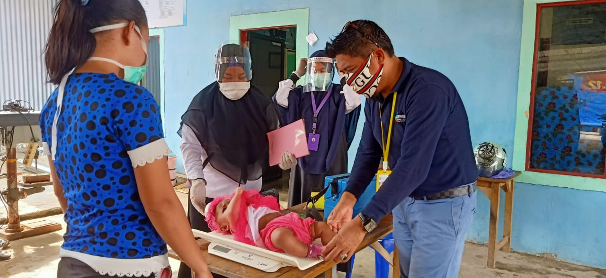

healthy.com

Sepintas, pengertian kesehatan masih terdapat perbedaan dari beberapa ahli. Namun, bila dikaji secara umum atas definisi sehat yang diberikan oleh para ahli maupun lembaga tersebut ternyata memiliki kesamaan.
Kesamaan pengertian yang dominan menyatakan bahwa kesehatan itu meliputi:
Sehat jasmani;
Sehat rohani;
Sehat mental;
Sehat sosial; dan
Sehat ekonomi.
Walaupun kata sehat identik dengan tidak terjadinya penyakit yang membahayakan tubuh, namun ternyata terdapat pula penggunaan kata sehat dalam kehidupan sosial kita, seperti politik sehat, bersaing sehat, pemerintahan yang sehat dan lain-lain.
Dari berbagai penafsiran, para ahli dan lembaga telah memberikan definisi yang jelas tentang kesehatan itu sendiri. Adapun definisi tersebut adalah sebagai berikut:
Menurut WHO
Pengertian sehat menurut WHO adalah sebagai berikut:
“Health is a state of complete physical, mental and social well-being and not merely the absence of diseases or infirmity”.
Sehat adalah suatu keadaan yang sempurna baik fisik, mental dan sosial tidak hanya bebas dari penyakit atau kelemahan.
Menurut UU No 36 Tahun 2009
Kesehatan adalah keadaan sehat, baik secara fisik, mental, spritual maupun sosial yang memungkinkan setiap orang untuk hidup produktif secara sosial dan ekonomis.
24 Upaya Kesehatan sesuai UU No 17 Tahun 2023
Penguatan Kemampuan Cyber dalam Pendidikan Kesehatan Masyarakat
Undang-undang ini merupakan pembaruan dari UU nomor 23 tahun 1992 tentang Kesehatan. Dalam undang-undang tersebut menyebutkan tentang pengertian kesehatan sebagai berikut:
Kesehatan adalah keadaan sejahtera dari badan, jiwa, dan sosial yang memungkinkan setiap orang hidup produktif secara sosial dan ekonomis.
Sehat menurut MUI
Sehat merupakan ketahanan “jasmaniah, ruhaniyah dan sosial” yang dimiliki manusia sebagai karunia Allah yang wajib disyukuri, dijaga, di pelihara, di kembangkan serta diamalkan sesuai dengan tuntunan-Nya.
Siti Nafsiah, 2000
Kesehatan adalah suatu keadaan sejahtera dari Jiwa, Raga dan Sosial yang memungkinkan setiap orang untuk hidup produktif baik secara ekonomi dan social.
Paune (1983)
Sehat adalah fungsi efektif dari sumber-sumber perawatan diri (self care Resouces) yang menjamin tindakan perawatan diri (self care actions). Sumber perawatan diri (Self care Resouces) mencakup pengetahuan, keterampilan dan sikap. Sedangkan Self care Actions merupakan perilaku yang sesuai dengan tujuan yang diperlukan untuk memperoleh, mempertahankan dan meningkatkan fungsi psikososial dan spiritual.
Perkins
kesehatan merupakan suatu keadaan yang seimbang dan dinamis antara bentuk dan fungsi tubuh juga berbagai faktor yang mempengaruhinya.
Neuman
Menyatakan bahwa kesehatan adalah suatu keseimbangan biopsiko, sosio, kultural dan spiritual pada tiga garis pertahanan yang fleksibel, normal dan resisten.
White
White menjelaskan sehat sebagai suatu keadaan di mana seseorang pada waktu diperiksa tidak memiliki keluhan apa pun atau tidak ada tanda-tanda kelainan atau penyakit.